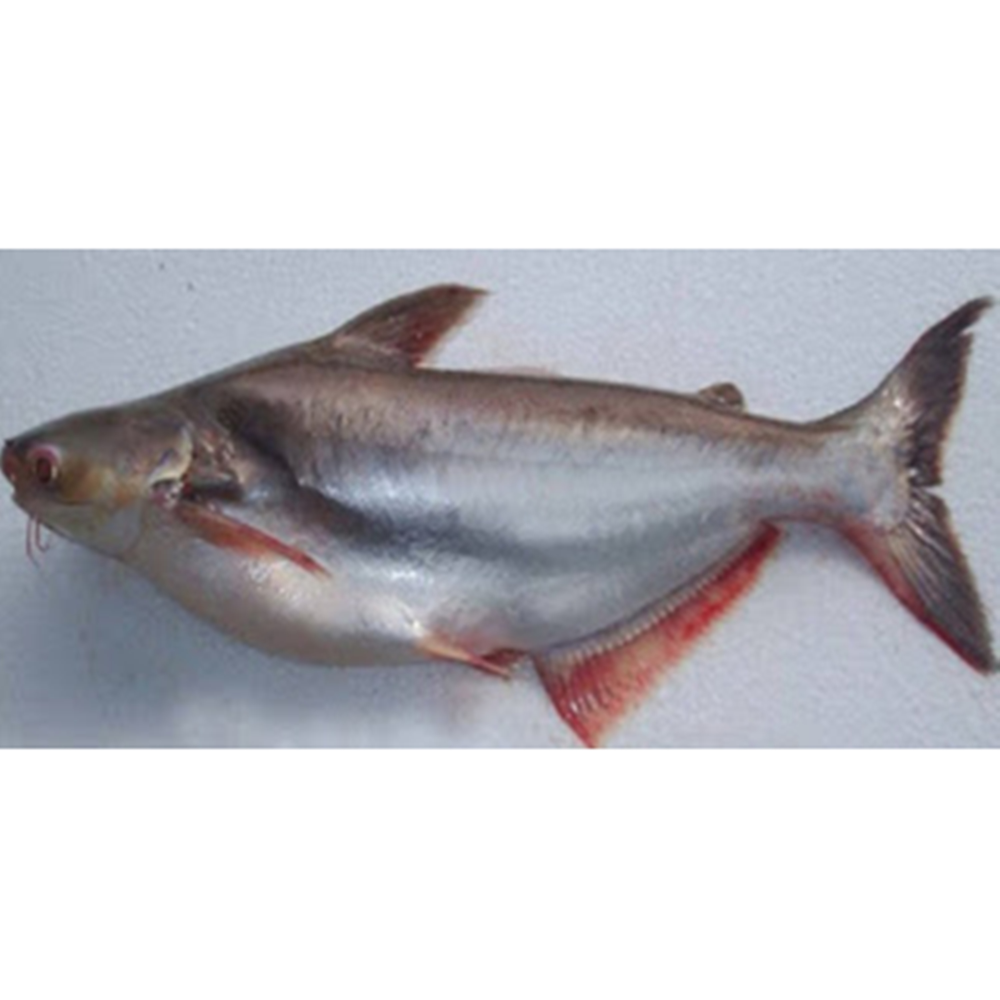

Ikan Patin
Ikan Patin atau Pangasius adalah suatu genus pada ikan yang memiliki sekitar 22 macam spesies dengan berbagai varian ukuran. Spesies ikan patin terbesar bisa mencapai panjang 2 meter, namun umumnya di pasaran ikan ini di jual pada ukuran sekitar 20 hingga 50 cm.
Kandungan Ikan Patin
| Protein (%) | Kalori (Kal) | Lemak (%) | Besi (mg) | Kalsium (mg) | Fosfor (mg) | Vit A (SI) | Vit B1 (mg) | Air (%) | BDD (%) |
|---|---|---|---|---|---|---|---|---|---|
| - | - | - | - | - | - | - | - | - | - |
Manfaat Ikan Patin
- Pencegahan Penyakit Kardiovaskular
- Mengurangi kandungan kolesterol
- Mencegah jantung koroner
- Mengoptimalkan Pertumbuhan Bayi
- Membantu pembentukan otot
- Menjaga kesehatan tulang
Daging dari ikan patin dapat membantu dalam mencegah terjadinya penyakit yang berhubungan dengan sistem kardiovaskuler. Hal ini disebabkan oleh lemak tak jenuh yang ADA di dalam daging ikan patin, sangat berguna dalam mencegah terjadinya penyakit tersebut. Kandungan lemak tak jenuh pada daging ikan patin ini mencapai 50% dari total keseluruhan nilai gizi yang terkandung di dalam ikan patin.
JBagi yang memiliki gangguan pada kolesterol seperti tingginya kolestrol di dalam tubuh, anda dapat mencoba mengkonsumsi ikan patin ini. Kandungan lemak tak jenuhnya dapat membantu dalam mengurangi jumlah kandungan kolesterol jahat yang ada di dalam tubuh.
Salah satu jenis penyakit kronis yang dapat dicegah adalah jantung koroner. Sama seperti kolesterol dan penyakit kardiovaskular lainnya, lemak tak jenuh yang terkandung di dalam manfaat ikan patin membuat tubuh terhindar dari penyakit jantung koroner. Hal ini karena lemak tak jenuh tidak akan mengendap dan menghambat aliran darah di dalam pembuluh darah.
Bagi para ibu hamil, ikan patin dapat bermanfaat bagi kesehatan dan pertumbuhan janin anda selama masa kandungan. Hal ini disebabkan oleh kandungan DHA dan manfaat omega 3 yang kaya pada ikan patin.
Bagi yang sedang melakukan program diet untuk membesarkan dan menguatkan otot, daging ikan patin sangatlah baik untuk di konsumsi.
Tulang dan duri dari ikan patin memiliki kandungan fosfor dan manfaat kalsium yang cukup tinggi. Kandungan fosfor dan kalsium yang cukup tinggi ini akan membantu memenuhi kebutuhan fosfor dan kalsium tubuh dalam sehari.